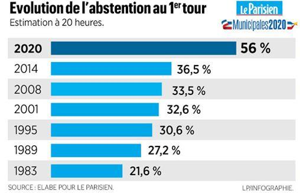
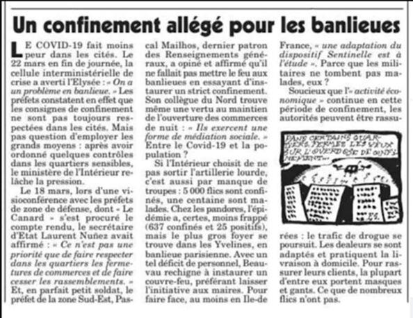

« Nous sommes dans l’œil du cyclone depuis le 1er mars. C’est là qu’on a vu arriver les choses. Je crois que les Français ne mesurent pas encore ce que cette crise sanitaire veut dire. C’est terrible. Des jeunes qu’il faut intuber de toute urgence, des personnes âgées balayées en quelques heures, des équipes médicales qui arrivent à saturation complète après 15 jours de mobilisation, des gens en pleurs, des plans nationaux, la peur pour soi et pour ses proches… Quand on est dedans, les choses sont extrêmement compliquées »
Jean Rottner, médecin et président de la
région Grand Est
Les derniers développements de cette crise sanitaire avec l’intervention du Chef de l’État le 14 mars, deux jours après celle du Premier ministre, laquelle se produisait déjà et étonnamment à peine quarante-huit heures après la première allocution du président de la République, sont la preuve d’une absence de ligne directrice dans la gestion de cette crise grave marquée par des hésitations successives, des déclarations ou décisions incohérentes et souvent contradictoires de la part de nos gouvernants. Ces derniers développements démontrent, en réalité, l’incapacité du pouvoir politique à anticiper et à décider dans les moments difficiles.
Ce refus d’affronter la réalité et cette tendance à attendre et à être soumis en permanence à l’événement et à réagir tardivement, voire pas du tout, malgré l’évidence de l’évolution d’une menace se retrouve d’ailleurs dans d’autres domaines comme l’immigration de masse, l’invasion migratoire, le séparatisme islamique, la déclaration de guerre du président turc qui utilise les migrants pour déstabiliser l’Europe. Dans tous les cas, les conséquences sont les mêmes : une mise en danger des Français dont certains ont déjà perdu et d’autres perdent ou vont perdre la vie, alors que la première des missions régaliennes de l’État est de protéger son peuple. C’est insupportable ! Il est crucial de rappeler ici les incohérences les plus flagrantes et de dénoncer le refus coupable d’admettre des évidences qui conduira à des drames.
Alors que l’Europe est devenue l’épicentre de la pandémie, des questions légitimes doivent, en effet, être posées. Où est passée l’Union européenne (UE) ? Depuis la fin du mois de janvier, elle en est encore à réfléchir sur une coordination des moyens. On a cependant pu constater cet esprit de solidarité tant prôné mais manifesté d’une façon curieuse par l’Allemagne qui a refusé à l’Italie la livraison de moyens de protection pour lutter contre le virus, alors que cette dernière fait face à une situation dramatique. Depuis deux mois, il faut bien admettre qu’entre ses membres c’est le chacun pour soi qui prévaut et que l’UE est inexistante comme elle l’a été lors de la crise migratoire déclenchée en 2015, incapable de protéger ses frontières et ses citoyens. Et elle ne fait pas mieux aujourd’hui face à la nouvelle menace d’invasion massive téléguidée par la Turquie. Quant à la crise financière qui se profile, la seule certitude c’est qu’elle sera beaucoup plus grave que celle de 2008. La seule réponse crédible à apporter, une fois la crise sanitaire actuelle passée, ne pourra résider que dans une révolte des peuples européens pour imposer une nouvelle organisation, un nouveau fonctionnement, un nouveau projet plus soucieux des intérêts des peuples pour cette UE à la dérive.
Par ailleurs, il va bien falloir reconnaître que l’idéologie progressiste et mondialiste qui guide nos dirigeants politiques est bien responsable de la globalisation, de l’accumulation et de l’addition simultanée des crises qui sévissent aujourd’hui, qu’elles soient sanitaire, migratoire ou économique. Les ravages du Covid 19 démontrent l’irresponsabilité des inconditionnels et des fanatiques du sans-frontiérisme qui refusent d’admettre, en utilisant une propagande ridicule (« le virus n’a pas de passeport », alors que tout le monde sait que c’est le porteur de virus – qui a un passeport – qui passe la frontière), que contrôler les frontières dans ces circonstances c’est du bon sens et non la manifestation d’un repli nationaliste. D’ailleurs, le directeur général de la santé ne dit pas autre chose lorsqu’il déclare:« Le virus ne circule pas en France, ce sont les hommes et les femmes qui le font circuler ». La frontière protège donc, c’est la première des barrières. Et en persistant dans le déni et en n’ayant pas réagi immédiatement, nos dirigeants ont une immense responsabilité dans l’évolution de cette crise sanitaire sur notre territoire. Car ils ont voulu, dès le début, privilégier et sauvegarder le volet économique – mondialisme oblige – et ont préféré attendre et voir comment évoluait l’épidémie. Par leur attentisme coupable, ils récolteront, malheureusement pour les Français, et une crise sanitaire et une crise économique qui seront toutes deux très sévères. D’ores et déjà, on peut estimer que le Covid 19 remet fortement en question la sacralisation de l’idéologie mondialiste qui veut supprimer les frontières et dissoudre les nations. Ce virus pourrait même bouleverser l’économie de la mondialisation, notre ministre de l’Économie ayant, probablement sans le vouloir, fait l’éloge d’un souverainisme convié à se développer puisqu’il souligne « la nécessité impérative de relocaliser un certain nombre d’activités et d’être plus indépendant sur un certain nombre de chaînes de production ». Il reconnaît ainsi les dangers d’une doctrine folle et destructrice imposée aux « peuples enracinés » qui la rejettent. C’est l’aveu d’un cuisant échec.
On ne peut, en outre, que s’étonner de la gestion du volet détection/protection dans la gestion globale de cette crise sanitaire. Depuis le début, et malgré les avertissements et les appels répétés du monde hospitalier et des médecins de ville, le silence du gouvernement sur l’absence des moyens de dépistage et de protection est assourdissant. Où sont passés les tests et masques pourtant indispensables pour détecter et protéger ? Pourquoi ne sont-ils toujours pas distribués alors que le 19 février dernier la France envoyait 17 tonnes de matériel de protection (combinaisons, masques, gants, produits désinfectants) à la Chine ?
Pourquoi avoir refusé d’organiser un dépistage systématique du virus, au moins dans un premier temps sur les personnes présentant des symptômes ? Pourquoi avoir refusé, pour des raisons idéologiques, le dépistage des personnes aux frontières ? Cette pratique permet pourtant, au moins, de ralentir l’épidémie en empêchant des personnes infectées d’entrer sur le territoire.
La gestion de la crise sur ce point particulier de la détection/protection est irresponsable car elle met en danger la vie des soignants pas protégés, celle des patients détectés trop tardivement car testés au moment de leur hospitalisation dans un état souvent grave et finalement celle des Français. Et elle ne permet pas, sur le plan des statistiques, de disposer des données réelles très supérieures à celles fournies quotidiennement et qui sont indispensables pour agir efficacement. Quant aux capacités des hôpitaux, un certain nombre arrivent à saturation avec le risque d’occurrence de situations dramatiques. La lamentable gestion de la crise sur ce volet est aggravée par la scandaleuse décision du président de la République d’engager son ministre de la Santé dans la bataille électorale pour les élections municipales, à Paris, à un moment très critique. Ce sens des priorités ne grandit manifestement pas nos dirigeants politiques qui, lorsque viendra le moment de rendre des comptes, ne pourront plus se retrancher derrière le couplet « responsable mais pas coupable ». Ils sont coupables ! Car l’interview de ce ministre dans le quotidien Le Monde du 17 mars 2020, constitue un aveu cynique d’amateurisme, d’incompétence, et surtout de gestion criminelle de la crise en ne prenant pas dès le début et en toute connaissance de cause des mesures adaptées à la menace, mettant ainsi en danger les Français. Ces révélations sont une bombe qui risque de provoquer le naufrage et l’effondrement du pouvoir.
Quant aux élections municipales, chacun s’attendait, compte tenu de l’évolution de la situation, à ce que dans son allocution du 12 mars, le président de la République annonçât le passage au stade 3 pour la crise sanitaire et le report des élections municipales. Rien de cela ne fut mentionné. Quarante-huit heures plus tard, dans un climat d’incohérence et d’incompréhension totale, le Premier ministre décidait un quasi-confinement général de la population mais, « en même temps », convoquait 46 millions d’électeurs le lendemain. Comprenne qui pourra ! Moins d’un Français sur deux s’est rendu aux urnes, le résultat du scrutin en étant finalement faussé à des degrés divers. Les Français ont ainsi assisté à un sabotage de ces élections municipales d’autant plus que le second tour a été reporté au 21 juin prochain. Cependant, compte tenu des turbulences qui risquent d’agiter le pays après la gestion lamentable de la crise sanitaire avec le bilan de ses victimes et après les confessions sidérantes de l’ancien ministre de la Santé, qui peut affirmer aujourd’hui que ce second tour se tiendra bien ?
De plus, des pressions ont été exercées sur l’exécutif pour maintenir à tout prix ces élections. A l’évidence, il aurait été plus sage de les reporter d’un an, mais cela confirme l’incapacité au plus haut niveau de l’État de décider en dernier ressort en situation de crise. Or, c’est bien ce qu’on attend d’un responsable politique. On reste stupéfait devant un tel manque de lucidité.
Enfin, les dernières mesures annoncées par le président de la République le 16 mars au soir doivent être à présent appliquées et scrupuleusement respectées par la population. Force est cependant de constater que nombreux sont ceux qui contestent et enfreignent sciemment les règles adoptées pour tenter de maîtriser la pandémie. Dans de nombreux secteurs tiers-mondisés de nos villes notamment, les habitants non seulement réagissent agressivement lorsque les policiers leur rappellent les règles à observer mais refusent ouvertement de les respecter. D’autre part, on observe également dans ces quartiers à forte présence immigrée la poursuite d’activités commerciales pourtant interdites depuis le 14 mars à minuit.
Par ailleurs, des groupes de racailles se distinguent par la poursuite de leurs activités liées à la drogue, la vente au noir de stocks de masques volés et par des actes de violence, de pillage, de voitures incendiées pour marquer leur refus du confinement et provoquer des incidents avec les policiers chargés de le faire appliquer. Il est évident que cela se terminera très mal.
C’est pourquoi le président de la République et son gouvernement seraient bien avisés d’envisager rapidement, pour éviter d’être une fois de plus obligés de réagir à l’événement, l’instauration de l’état d’urgence, avec ponctuellement et localement un couvre-feu imposé si besoin par la force, pour assurer l’application de ces mesures. Gouverner, c’est prévoir. En tout cas, cette crise met en évidence la folie que constitue la soumission à cette idéologie multiculturaliste qui démontre l’impossibilité de faire vivre plusieurs peuples sur un même sol. Il faut que cela cesse et cela devra conduire à une réflexion sur la nécessité de désafricaniser, démaghrébiniser et désislamiser notre société aujourd’hui gangrénée et qui court à sa perte. Il en va du salut de la France et de son peuple en souffrance et en danger.
Alors, face à cette crise sanitaire, le manque de clairvoyance et l’absence de lucidité pour saisir la réalité de la menace révèlent un certain amateurisme sinon une incompétence du pouvoir politique installé dans ses certitudes par idéologie et provoquent un sérieux doute sur son aptitude à gérer les moments difficiles et à décider rapidement dans l’intérêt de la nation. « Soyez fiers d’être des amateurs » lançait récemment le président de la République aux députés LaREM. Il n’y a vraiment pas de quoi être fiers ! D’autant qu’il semble, si l’on en croit l’ex-ministre de la Santé, que le chef de l’État, le Premier ministre et d’autres responsables savaient à quoi s’en tenir dès le mois de janvier. Si c’est le cas, ils ne pouvaient pas ignorer le risque d’une particulière gravité auquel ils exposaient les Français en ne réagissant pas immédiatement. Il faudra bien, lorsque cette crise sanitaire sera passée, que des comptes soient rendus. Il est donc légitime d’envisager dès à présent la création d’une commission d’enquête qui devra déterminer si l’exécutif, au sens large, a manqué dans cette guerre à ses devoirs dans l’exercice de ses responsabilités.
Partager cette page